Introduction
Overview
Calibration refers to the process of quantifying samples of unknown concentrations with known (standard) samples. Mass spec experiments are a crucial component of metabolomics experiments but the output obtained from software like El-MAVEN and MultiQuant are intensities which are unitless. From these intensities, we can calculate fractional enrichment and do relative comparisons. But for some analysis like kinetic flux analysis, we need absolute concentrations of the metabolites. These concentrations have units like M, μM, mM like any other chemical concentration. In order to absolutely quantify these metabolites, experiments are done with standard samples of known concentrations. QuantFit uses these data points to get mathematical mappings from intensities to concentrations which are subsequently used to calculate concentrations of experimental intensities.
Scope of the app
-
Quantifies intensities obtained from El-MAVEN and MultiQuant using internal standards.
-
Supports quantification of metabolites and labeled fragments of metabolites.
-
Provides various curve fitting options like linear, exponential, log-log, polynomial and power.
-
Provides an option to correct the injection efficiency of samples using total ion count normalization.
-
Provides the biosample concentration plot to visualize the concentration of all biosamples in a barplot.
-
Incorporates Grubbs' test to detect outlier samples.
-
Provides various options to optimize the curve fit with e.g.:
-
Slope-intercept equation for quantification
-
Rejecting outlier samples
-
Normalizing concentration values with an internal standard
-
Assigning weights to the standard samples
-
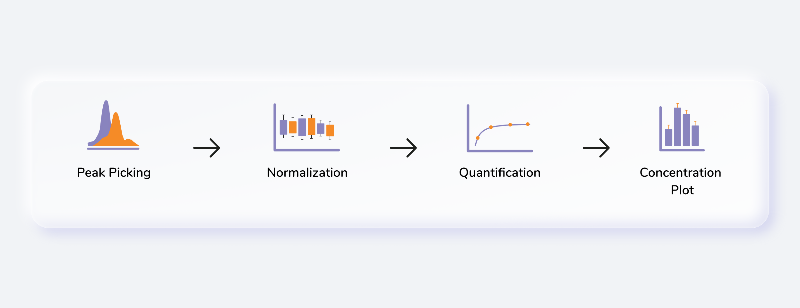
Getting Started
User Input
QuantFit requires the following three files as input:
Intensity file
The intensity file is mandatory for both LC-MS and LC-MS/MS data and should be in either .csv, .xls, .xlsx, .txt format.
The intensity file can be either in the long format.
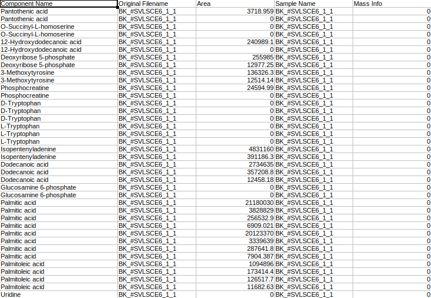
where,
-
Original Filename is the Sample name
-
Sample Name is the Cohort name
-
Component Name is the Name of the metabolite
-
Mass Info is the Mass information of fragments
-
Area is the Intensities
Or it can be the .csv file exported after peak picking in El-MAVEN.

Metadata standard sample file
The metadata standard file is mandatory for both LC-MS and LC-MS/MS data and should be in either .csv, .xls, .xlsx, .txt format. This file contains concentration information of the standard samples using which quantification is performed.
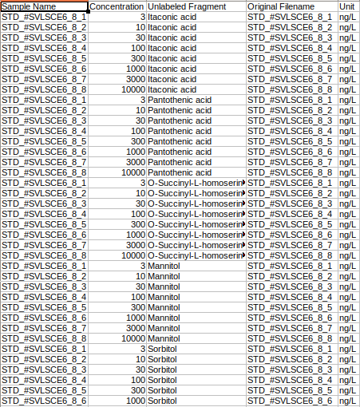
where,
-
Original Filename is the Standard sample name
-
Sample Name is the Standard cohort name
-
Concentration is the Concentration of standard samples
-
Unit Info is the Unit of concentration
-
Unlabeled Fragment is the Unlabeled fragment information
Metadata mapping file
The metadata mapping file is optional LC-MS but mandatory for LC-MS/MS data and should be in either .csv, .xls, .xlsx, .txt format. This file is required to map daughter fragments to their parent fragments.
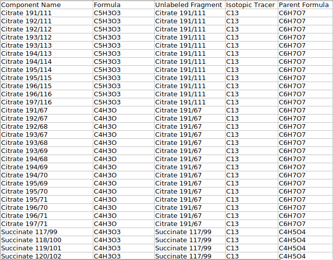
where,
-
Component Name is the Name of the daughter fragments
-
Formula is the Formula of the particular daughter fragment
-
Unlabeled Fragment is the Name of the metabolite
-
Isotopic Tracer is the Element that was labeled
-
Parent Formula is the Formula of the parent fragment
Steps involved in data processing
-
Process MS files using El-MAVEN or MultiQuant
-
Upload intensity files
-
Create/Upload metadata files
-
Adjust quantification parameters and Quantify
-
Download quantification files in CSV format
Caveats
-
We use the entire standard and negate any background subtraction.
-
All isotopologue intensities are added to the parent intensity in case of labeled data.
-
Standard samples should contain “std” in their cohort name.
-
Mass Info column in the metabolite intensity file should be 0 throughout for LC-MS data
-
In case there are no cohorts in your data, the contents of Sample Name and Original Filename in the standard metadata file should be the same.
-
Unlabeled Fragment in the standard metadata file is the metabolite name for LC-MS data.
Tutorial
Upload Files
Select QuantFIt from the dashboard under the Metabolomics Data tab. Create a New Workspace or select an existing one from the drop-down and provide the Name of the Session to be redirected to QuantFit's upload page.
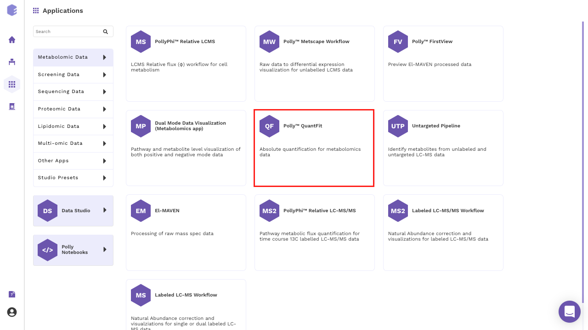
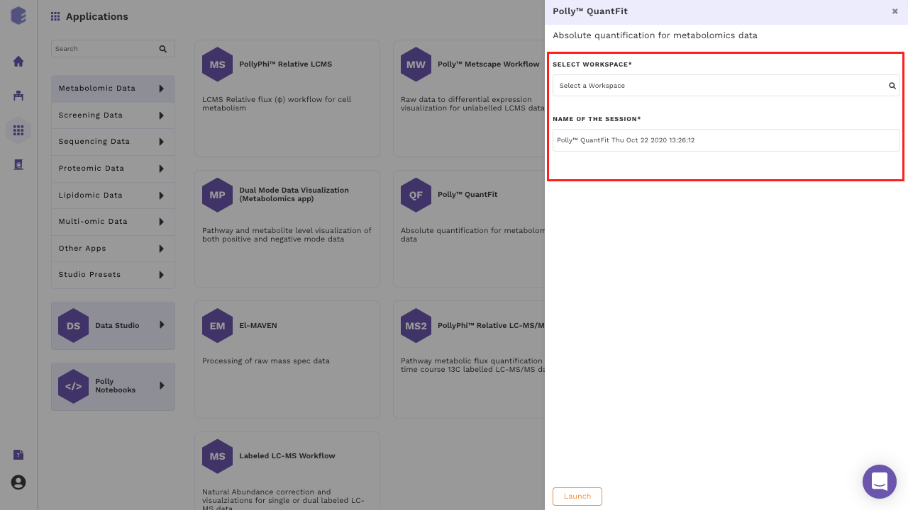
Click on Upload File and upload the metabolite intensity file.
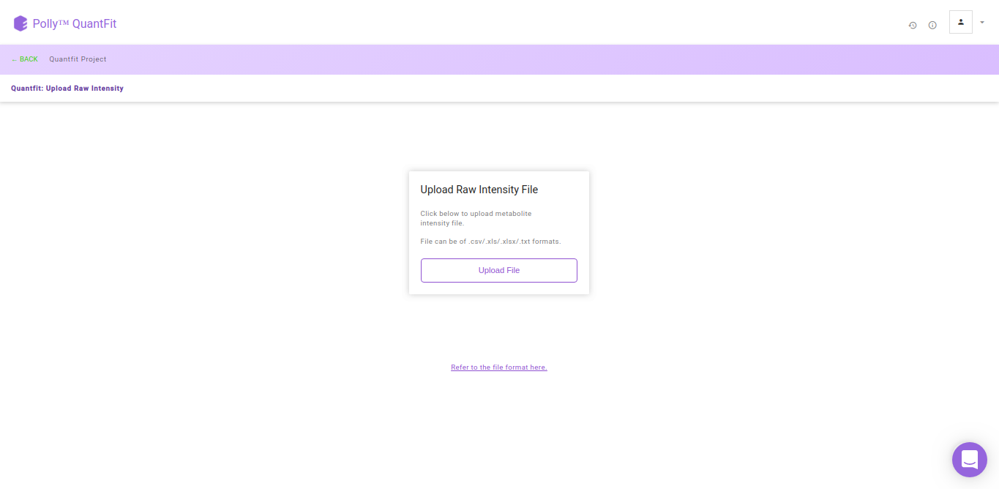
Metadata Interface
After the file have been successfully uploaded you will be redirected to the Metadata interface. This interface provides you the ability to either upload or create your metadata.
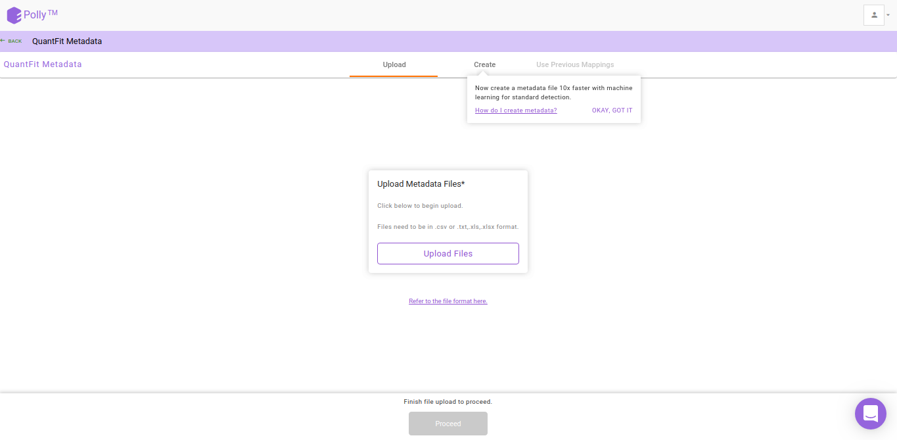
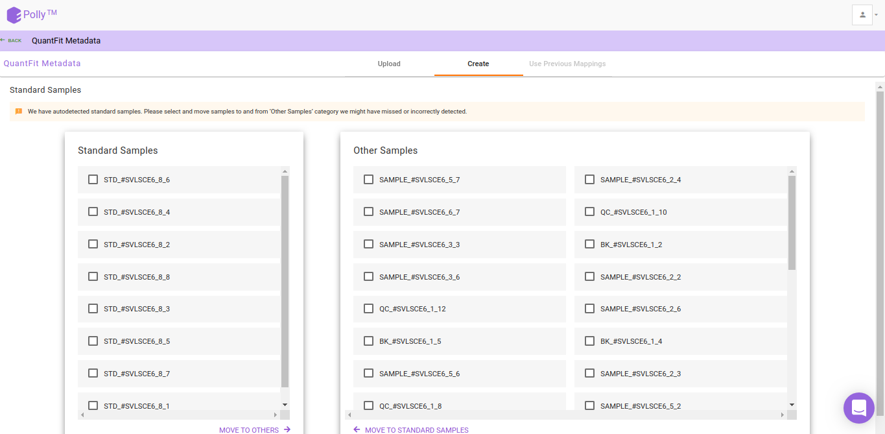
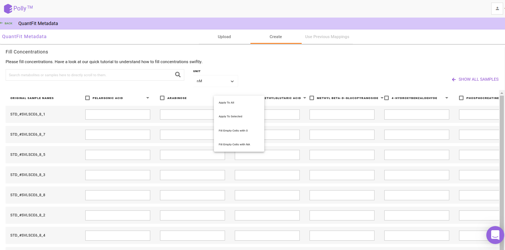
Watch the demo video below for more information.
Injection Efficiency Correction
Injection Efficiency Correction is used to normalize the biosamples with respect to internal standards in the data on the basis of total ion count. We recommend the highest intensity non-outlier sample when correcting for injection efficiency. You can also select a sample from the outliers detected with Grubbs' test for this normalization.
To normalize intensities of metabolites present in the sample, by default we calculate a normalizing factor for each sample. This is calculated by dividing each intensity value by the maximum intensity value among the non-outlier samples. Then the intensity values of all metabolites in each sample is divided by the respective normalizing factor. You can also select this highest intensity sample from the list of outlier samples. QuantFit uses Grubb's test to detect outliers from among the samples.
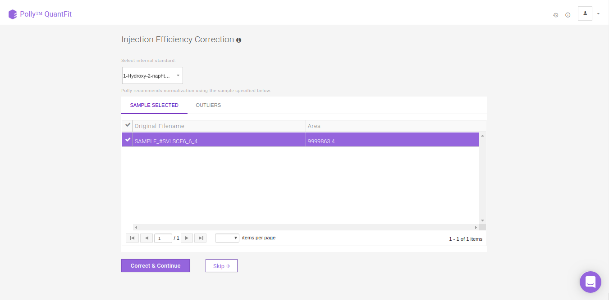
Quantification Dashboard
By default, linear quantification will be performed by the tool after performing the above-mentioned steps. However, you can optimize quantification by changing the curve fit to Polynomial, Exponential, LogLog or Power depending upon your data. In case you feel there is an outlier in your data, click on the sample and then on the “-” sign in the pop-up box as shown in FIgure. 13. Click on Quantify to recalculate the curve fit at the new parameters.
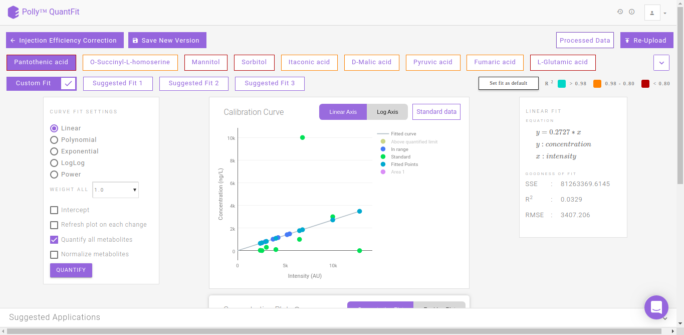
QuantFit plots quantified values and standard values on the calibration curve. You can optimize the curve fit from this interface or view this curve on linear and log axes for better analysis.
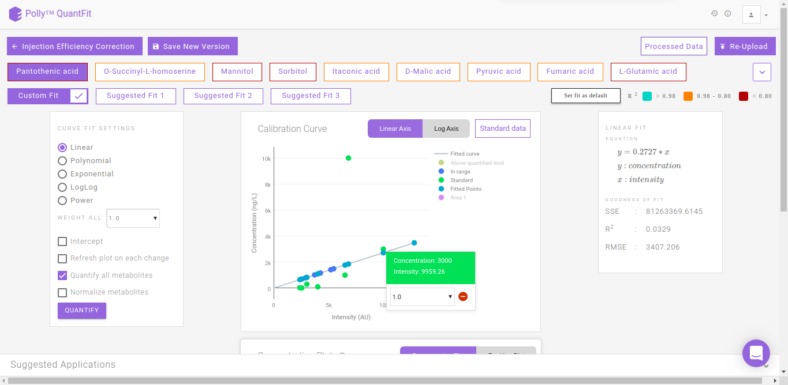
The Concentration Plot gives the concentrations across all biosamples as a barplot. The Residue Plot gives the residual error for the curve fit as a barplot. You can toggle between these plots by clicking on their names as shown in Figure 14.
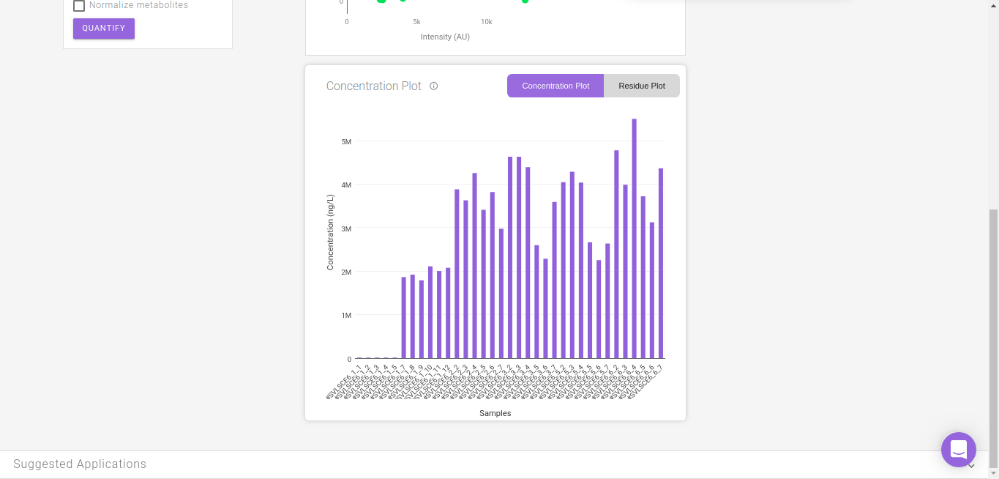
Clicking on Standard Data on the Calibration Curve shown in Figure 12. gives information about the standard mappings in the input file.
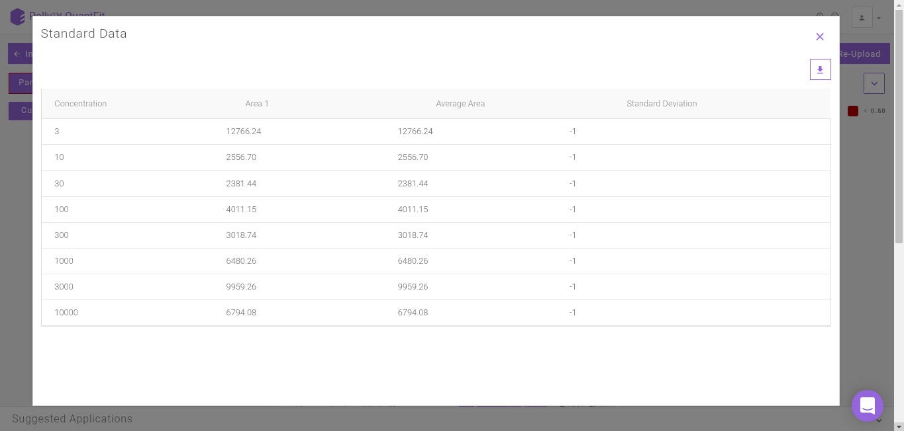
Suggested Fits
The suggested fits option makes it possible for you to save time spent on manually curating data by removing outliers and selecting the best fit. The samples furthest from the default linear curve are removed individually and the curve fit is calculated. Subsequently the fits calcualted with the best r2 apart from the default linear fit (Custom FIt) are displayed as Suggested Fit 1, Suggested Fit 2 and Suggested Fit 3. You can select any fit and mark it as the default fit by clicking on Set Fit as Default.
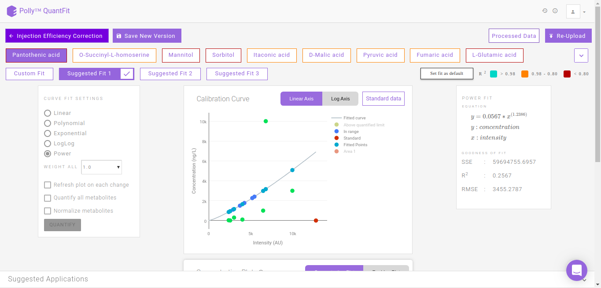
Normalization
You can also normalize the quantified concentration values with respect to an internal standard's concentration values. You can select an internal standard from the list of metabolites for normalization. To normalize the concentration of a given metabolite, concentrations from individual samples are divided by the respective concentration of the internal standard.
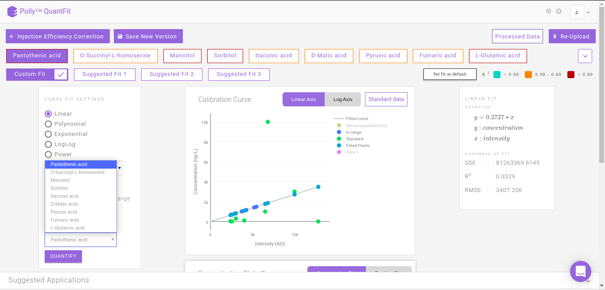
Logs
It summarizes all the information of each curve fitting performed for every metabolite.
-
Missing metabolite data: Metabolites for which standard sample is absent
-
Name of metabolite
-
Curve fit information: Type of fit
-
Standard Point Information: Standard data information for the metabolite
-
Curve Fit Performed: Curve fitting information and Goodness of fit
-
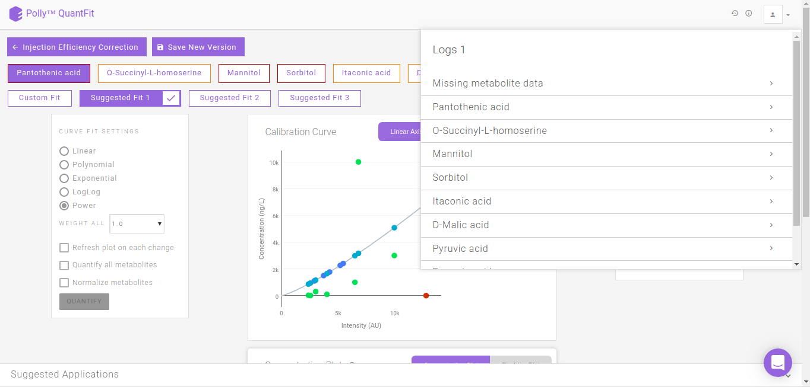
Processed Data
It shows the quantified values of every metabolite in a table. This can be downloaded as a .csv file by clicking on the download icon.
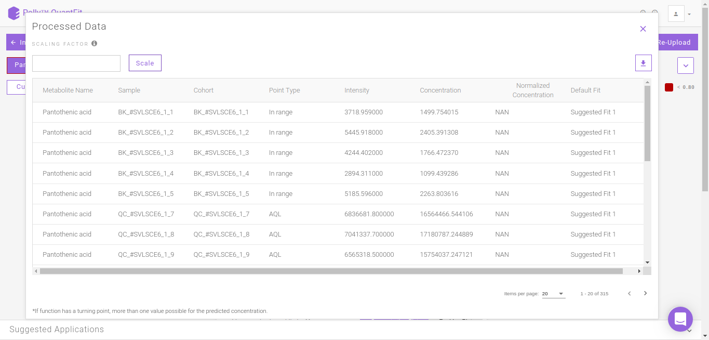
Details about the app
Goodness of fit (GOF) parameters
The following section describes the formula used for calculating the curve's goodness of fit
Sum of squares about the mean
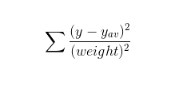
where:
y: list of observed values
y_av: the average of observed values
weight: weights given to the sample points (by default 1 is given to each sample point)
Note:
- For Gaussian uncertainties, sigma instead of 1/sigma2 is used
Sum of squares of residuals
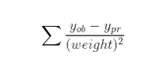
where:
ob: list of observed values
pr: list of predicted values
weight: weights given to the sample points
Note:
- For Gaussian uncertainties, sigma instead of 1/sigma2 is used
R2
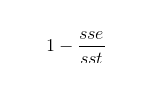
where:
sst: the sum of squares of residuals
sse: the sum of squares about the mean
Root mean square error
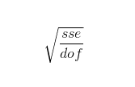
where:
sse: the sum of squares of residuals
dof: the model degrees of freedom, is the length of y minus the number of parameters calculated in the model
Errors and warnings
Errors raised while selecting files for uploading
-
Number of files error: Three files are required for quantification. If you try to upload more than two files then this error is thrown by the tool.
-
File type error: Please select the correct file type. If the selected file and file type do not match, then this error is thrown by the tool.
File validation errors and warnings
-
Missing Value warning: It is raised when any column in the uploaded files has missing values. It also specifies the action taken by the tool if you choose to continue.
Example:
Warning - Row Number 8192 : column Area has missing value Action Taken - Missing value of columns replaced with 0
Videos
References
- Gorrochategui E. et al, "Data analysis strategies for targeted and untargeted LC-MS metabolomic studies: Overview and workflow", TrAC Trends in Analytical Chemistry 2016 82, 425-442